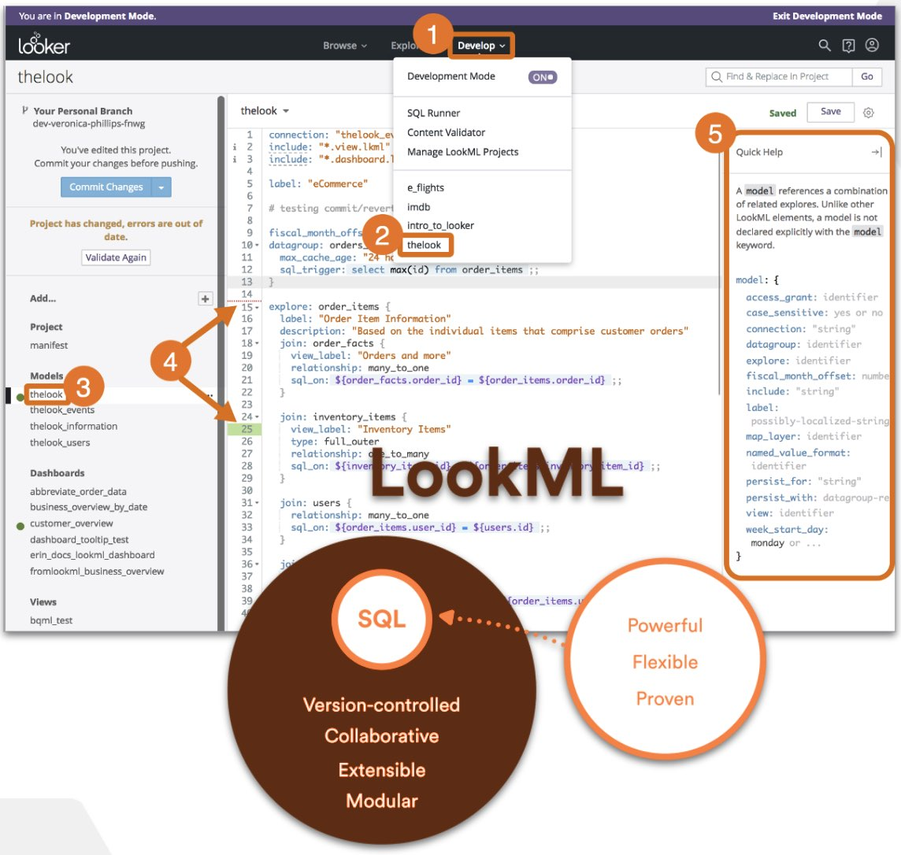
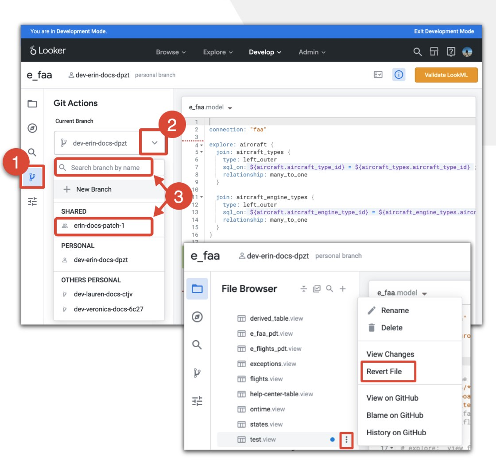
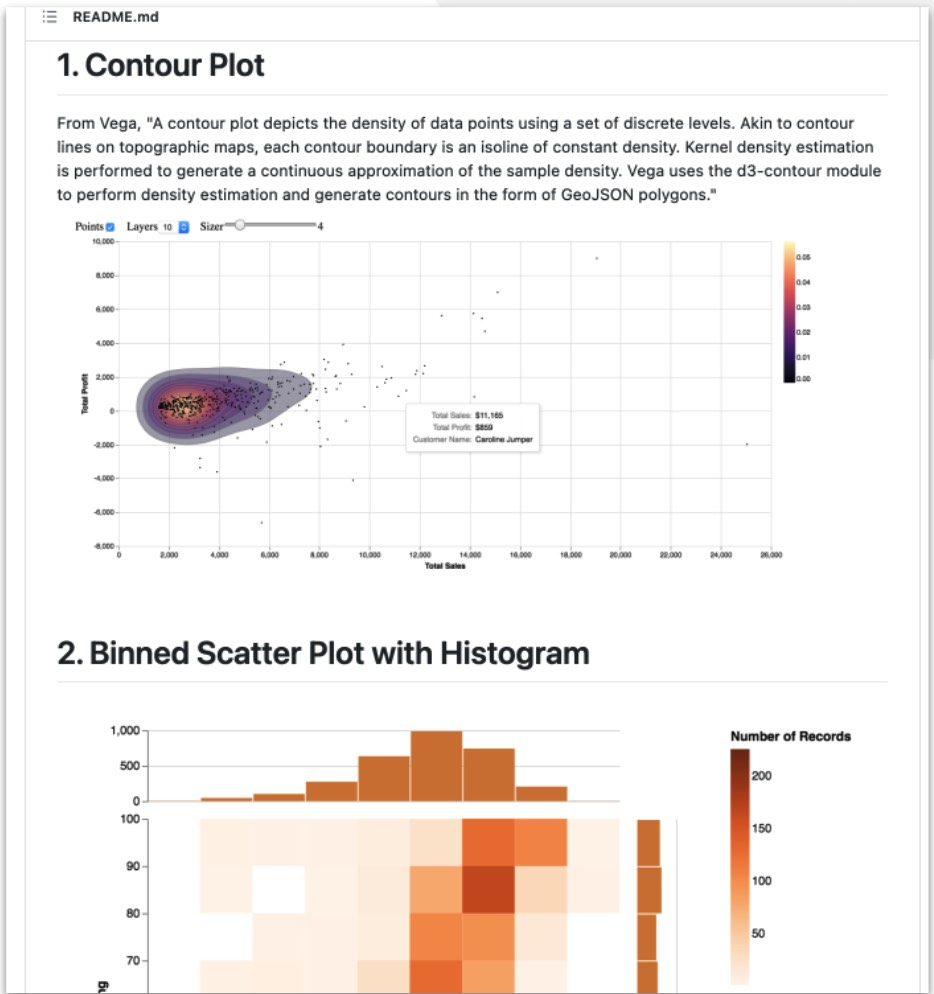

Three things I like about Looker
Looker is a business intelligence and data visualization tool that was recently acquired by Google. After nearly 6 months of using Looker for building dashboards and visual analytics, here are the top 3 things I like about this platform.
Looker is a business intelligence software and big data analytics platform that helps you explore, analyze and share real-time business analytics easily. Looker is part of the Google Cloud platform.
1. LookML
LookML is a language for describing dimensions, aggregates, calculations, and data relationships in a SQL database. Looker uses a model written in LookML to construct SQL queries against a particular database.
LookML provides a dedicated modeling layer for your dashboard applications. Think of LookML objects as building blocks that can be extended and combined in different ways without repeating code.
Compared to simply writing SQL queries (for example), this will seem an extra burden at first, but pretty soon it'll become obvious that it's a powerful mechanism for building abstractions and sharing them across projects and people.
Here's an example from Dimensions. My application deals with Publications and Journals.
Reusable predicates and business logic gets encapsulated in LookML (eg publications without journals, tot journals) and can reference / build on each other. NOTE The only place referencing the underlying database is the the first object (sql: ${TABLE}.journal.id).
#
# Journal Metrics
#
dimension: journal__id {
type: string
sql: ${TABLE}.journal.id ;;
description: "Unique ID of a Journal"
group_item_label: "Journal ID"
link: {
url: "https://app.dimensions.ai/discover/publication?and_facet_source_title={{ value }}"
}
}
dimension: missing_journal {
description: "Yes if pub does not have a journal ID"
hidden: yes
type: yesno
sql: ${journal__id} IS NULL ;;
}
measure: total_articles_without_journal {
type: count
group_label: " Journal Metrics"
filters: [missing_journal: "Yes", type: "article"]
}
measure: unique_journals {
type: count_distinct
sql: ${journal__id} ;;
}
See also: Best Practice: Writing Sustainable, Maintainable LookML

2. Versioning
Looker uses Git to record changes and manage file versions. Each LookML project corresponds with a Git repository, and each developer branch correlates to a Git branch.
Version control can be done directly via Looker UI, or developers can sync repo locally and work using any IDE or the command-line.
This is applicable to both modeling layer and dashboards, since dashboards can also be rendered as LookML (and edited as such).
This piece of functionality itself makes Looker stand out when compared to other similar products, in my opinion. It provides a much more solid and developer-friendly environment for creating scalable and reusable analytics applications.

3. Custom Visualisations
The Looker Visualization API is a pure-JavaScript API that runs in a sandboxed iframe and is hosted within the Looker application.
No matter what visualization software you're using, it'll always fall short of some feature you need. That's my experience, at least.
Looker addresses that problem by allowing end users to build custom visualization plugins that become first-class objects in Looker. To sum it up: virtually, any JS visualization can be turned into a reusable Looker component.
There are clear recipes for integrating third-party javascript visualizations in Looker, either by adding it as a public Marketplace ‘plugin’ or by simply adding it privately to your project.
A simple how-to guide is on Github.
Several open source extensions are already available eg Vega for Looker and a Plotly Network diagram.

Find out more
Start by checking out the Looker user guide.
YouTube has many videos that show Looker in action.